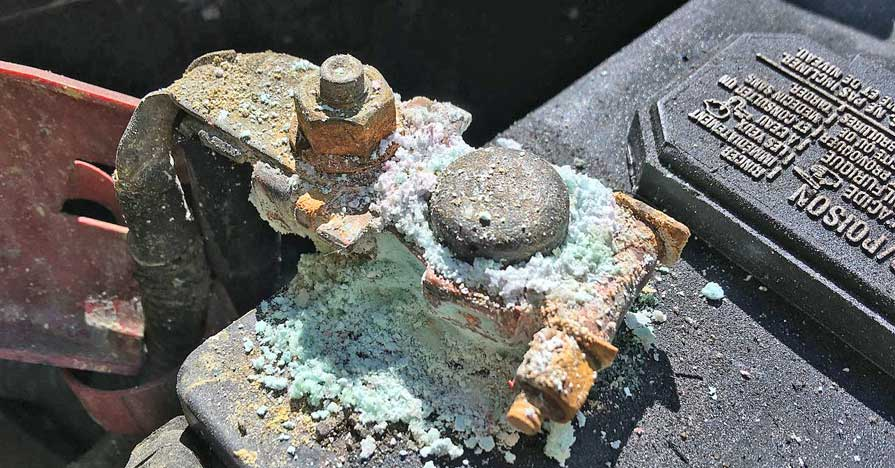

Identifying and Solving Common Car Battery Problems in Toronto
Car batteries can be quite unpredictable, especially when subjected to Toronto’s varying climate conditions. Let’s explore some common problems and their solutions tailored for GTA residents.
Introduction
Many drivers in the GTA, including areas like Markham and Pickering, face battery issues more often than they expect. Knowing what to look for can help prevent unnecessary breakdowns.
Common Problems
- Battery Terminals: One of the most common issues is loose or corroded battery terminals, which disrupts the electrical current.
- Old Age: Batteries typically last three to five years. Beyond that, their efficiency diminishes.
- Parasitic Drains: Leaving lights or electronics on can drain the battery unexpectedly.
Symptoms of Battery Issues
Signs to be wary of include dim headlights, slow engine crank, and the check engine light turning on. If you notice these early, you can avoid getting stranded.
Solutions and Tips
- Regular Inspections: Regularly inspect your battery, especially before winter hits Scarborough and Ajax.
- Keeping Terminals Clean: Clean terminals with a mixture of baking soda and water to prevent corrosion.
- When to Call a Professional: If your car doesn't start after a jump or if issues persist, professional services in North York and Markham can efficiently diagnose the problem.
Conclusion
Addressing minor issues early can prevent more severe problems. For consistent service and peace of mind, drivers in the GTA, including Pickering and Markham, should keep a trusted battery service provider on speed dial.